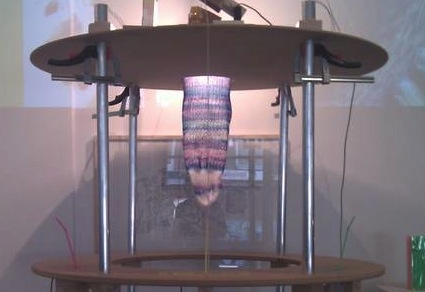
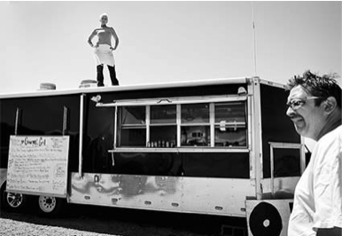

Experiments & hacks
Untitled sock project
The goal of the installation is to create a beautiful sock-shaped knit-piece through a cooperative blowing process. The construction can be manned by as many as 3 participants at a time. Each of these users can blow on a pressure sensor through a colored straw that is presented to the players at face-level.
Work
Black Gold Boom
Black Gold Boom traverses the rigs, man camps, and crossroads of North Dakota's oil rush, capturing compelling audio portraits of the workers who have streamed there, and unpacking the implications of the region's rush to drill. Don't miss Rough Ride, a groundbreaking immersive short-form tour of oil country, produced in partnership with Zeega.
Austin Music Map
Black Gold Boom traverses the rigs, man camps, and crossroads of North Dakota's oil rush, capturing compelling audio portraits of the workers who have streamed there, and unpacking the implications of the region's rush to drill. Don't miss Rough Ride, a groundbreaking immersive short-form tour of oil country, produced in partnership with Zeega.

Planet Takeout
Planet Takeout serves up perspectives from both sides of the counter on Chinese carryouts as crossroads of life and culture. Wang's interactive documentary, produced with Zeega, features vignettes from outposts in diverse Boston neighborhoods—illustrating how they act as lenses onto the communities they feed.